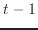
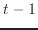

Next: Insert
Up: Menu
Previous: File
Edit
- Undo and Redo allow you to step back and forward in your editing
history. If you step back a few steps, and then edit the model, all
subsequent model states will be erased from the history.
- Cut/copy/paste. Selecting, or lassoing a region
of the canvas will select a group of icons, which will be shaded to
indicate the selected items. Wires joining two selected items will
also be selected. Note that, compatible with X-windows, selecting
automatically performs a copy, so the copy operation is strictly
redundant, but provided for users familiar with systems where an
explicit copy request is required. Cut deletes the selected
items. Paste will paste the items in the clipboard as a
group into the current model. At the time of writing,
copy-pasting between different instances of Minsky, or into other
applications, only works on X-windows systems. Pasting the clipboard
into a text-based application will be a Minsky schema XML document.
- Create a group using the
contents of the selection. Groups allow you to organise a more
complicated systems specification into heigher level modules that make
the overall system more comprehensible.
 
 
Next: Insert
Up: Menu
Previous: File
Russell Standish
2015-10-23